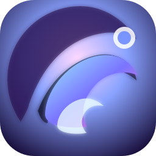

音のしずくが描く世界
静寂を彩る透明感ある歌声と、幻想的なサウンドスケープを武器に活動するシンガー。 音のひとしずくが波紋を広げるように、聴く人の心へまっすぐ届く楽曲が特徴です。

透明な歌声で紡ぐ、未来のポップス
澪の流れのようにしなやかに、夜明けの光のように凛として。
最新シングル「月光の詩」とアルバム『Eternal Journey』の世界観をここで体感してください。
PROFILE
静寂を彩る透明感ある歌声と、幻想的なサウンドスケープを武器に活動するシンガー。 音のひとしずくが波紋を広げるように、聴く人の心へまっすぐ届く楽曲が特徴です。
エレクトロニカ、シティポップ、オルタナティブR&Bを織り交ぜたハイブリッドなサウンド。 アナログとデジタルを行き来するアレンジで、夜の都市を漂う感覚を表現しています。
霧と光をイメージしたビジュアルアートもセルフプロデュース。 音楽だけでなく、世界観すべてをトータルで届ける表現者として注目されています。
MUSIC
SINGLE
朧に揺れる月光を追いかけるように、凛とした歌声と煌めくシンセが交差する澪音の最新シングル。 静寂の中で芽生える感情を丁寧にすくいあげ、夜の街をやさしく照らします。
Sunoで聴くALBUM
月光の詩と同じ世界線で紡がれる5つの章。光と影、記憶と未来が交差する、澪音のコンセプトアルバム。 各トラックが永遠の旅路の情景を描き出します。
柔らかな光が差し込む始まりの瞬間。静謐なアルペジオが旅立ちの息遣いを描きます。
Sunoで聴く疾走するリズムと鋭いシンセが嵐を切り裂く。昂揚と緊張が交錯する第二章。
Sunoで聴く深い影の奥で響く低音と荘厳なコーラス。静寂に潜む強さと孤独を映す中盤の核。
Sunoで聴く互いを照らし合う声とシンセが絡み合い、絆の温度を感じさせるエモーショナルな一曲。
Sunoで聴く旅の果てに訪れる夜明け。壮大なクレッシェンドが未来への扉を開き、物語を締めくくります。
Sunoで聴くSTORYLINE
Sunoとの最新コラボレーションでシングル「月光の詩」を公開し、5曲入りアルバム『Eternal Journey』を発表。 コンセプトストーリー仕立ての作品として話題を集める。
都内プラネタリウムを会場に、音と光のインスタレーションを組み合わせた空間演出で話題に。
SNSで公開したデモ音源が口コミで拡散。デビュー前から世界各地のリスナーとつながる。
FANBASE
制作メモや未公開デモ、歌詞の朗読など、ファンクラブ限定のプレミアム配信を毎月更新。
ライブ後の余韻をシェアするオンライン打ち上げや、制作現場のライブストリーミングを開催。
世界中のファンが描く澪音のアートワークを展示。毎月ピックアップ作品を紹介しています。
CONNECT
新曲、出演情報、コラボレーションのお知らせはニュースレターで最速配信。 メールアドレスを登録して、澪音の最新モードを受け取ってください。
最新のライブ映像や制作の舞台裏はSNSでも発信中。